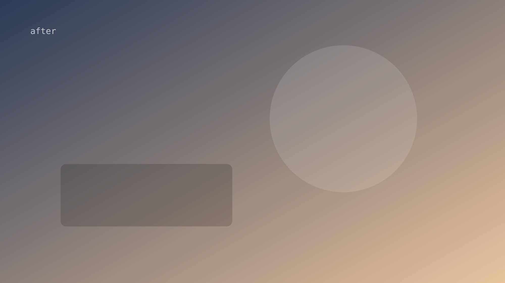

Ledger savings flow
Redesign of the savings set-up in a banking app: from nine screens to four.
- Role
- Lead designer
- Team
- with 2 engineers and 1 researcher
- Year
- 2025
- For
- Ledger Bank
The decision
People dropped out when asked for a savings goal. I moved the goal to after the first deposit, because the first deposit was the moment they cared.

DecisionPeople dropped out when asked for a savings goal. I moved the goal to after the first deposit, because the first deposit was the moment they cared.




What changed
Set-up completion went from 41% to 63% in the first month after launch.